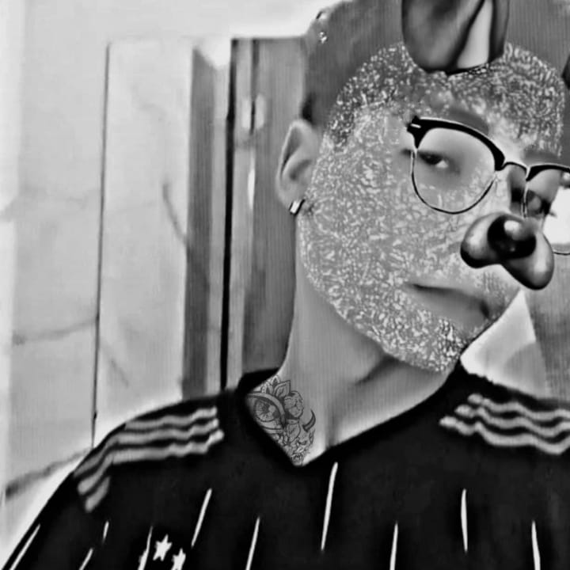
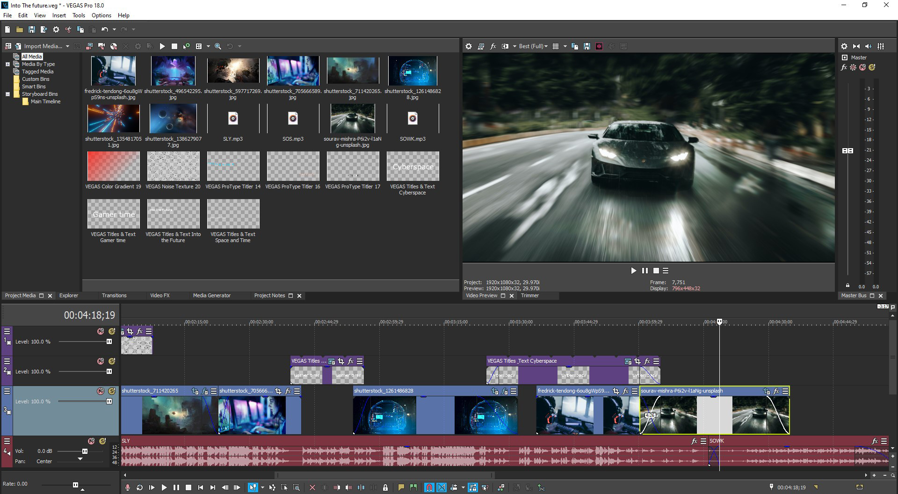
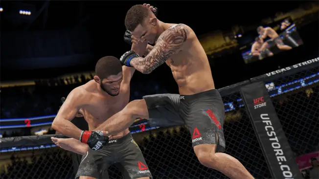

Gustavo Merlin
Editor de vídeo experiente com habilidades em gameplay e highlight. Capacidade comprovada de criar conteúdo visual impactante e cativante. Conhecimento avançado em softwares de edição, como Sony Vegas Experiência Profissional: Editor de Vídeo Freelancer - Criar e editar vídeos de gameplay e highlight para clientes. - Utilizar habilidades avançadas em edição para aprimorar a qualidade visual dos vídeos. - Cumprir prazos e entregar projetos dentro das especificações dos clientes.
Conhecimento
"

